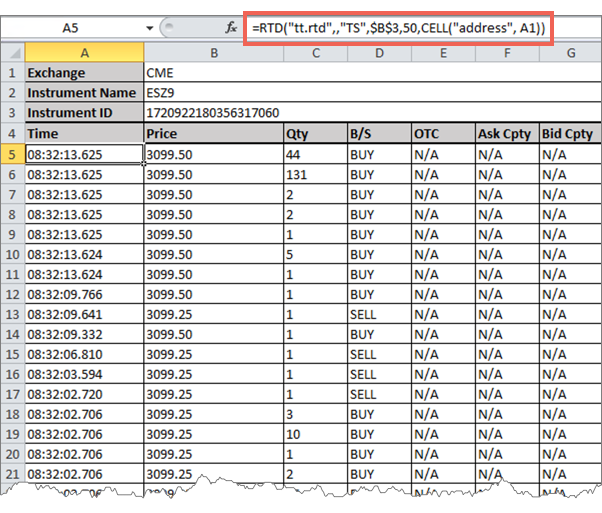

The TT RTD Server allows you to retrieve real-time Time and Sales data for an instrument, providing details for each trade including side, time, price and quantity. It also indicates whether a trade is a block (OTC) trade and provides the counterparty IDs when provided by an exchange, such as B3.
The following illustration retrieves the 100 most recent updates for the CME ES Dec19 contract.

Note: The TT RTD Server begins retrieving trade data only when the first trade occurs after the formula initializes. Historical time and sales data is not available through RTD.
The RTD formulas for extracing time and sales data using the following format:
=RTD("tt.rtd",,"TS",instrument_id,num_of_rows,CELL("address",A1))
where:
Note: The second parameter is the name of the external server running the RTD Server. As the TT RTD Server always runs locally, you must omit a value for the second parameter or supply an empty string (“”). However, you must account for the parameter in the formula.